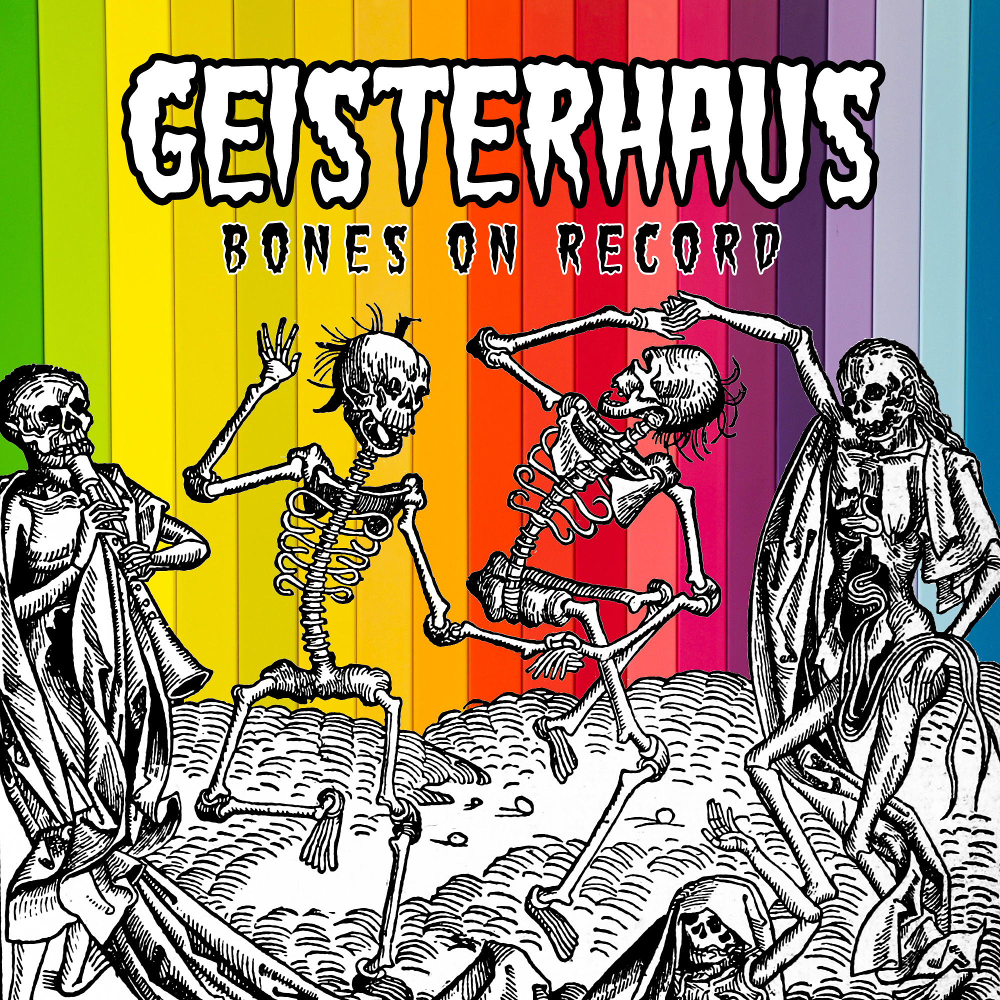

I, Tom Hammersley, have been a computer enthusiast (read: nerd) from a very early age. When I was a child back in the nineties I would eagerly await visits to my computer programmer Grandad's house, on which I would make a dash to see what new software he'd installed on his state-of-the-art (relatively speaking) PC. Whether it was a game, a digital drawing interface or some kind of file management utility, I would gleefuly click every button in an attempt to discover how the processes worked until that poor, over-worked computer crashed under the weight of it's own RAM.
Now, after a lifetime of experimenting and self-teaching, I have made a concerted effort to focus my knowledge by signing up to a Software Engineering course. When I'm not sat at my laptop studying, I'm most likely to be found:
- Sat at my laptop writing and producing music
- Sat at my laptop editing videos
- Sat at my laptop watching videos on game logic and programming
- In the kitchen, making a sandwich and having a bit of a rest
Tom has been making electro-punk music under the name of "Geisterhaus" since 2018. He makes and records his music at home using
only his mind, a laptop and a guitar (and sometimes wine). He has released one
album,
one stand-alone single
and four music videos.
If you wish to subject yourself to this music you can click the button below to purchase his album, Bones on Record:

He is also active on social media and regularly broadcasts his asinine thoughts to literally tens of people. You can follow him on Twitter and Facebook.